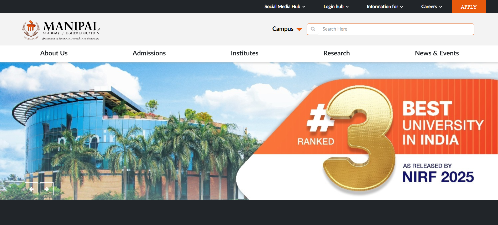
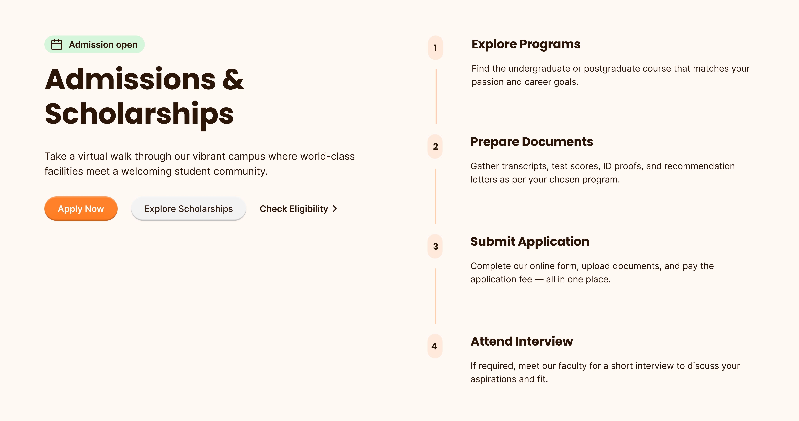

THE CHALLENGE
Many university websites present large volumes of information, but the structure often makes it difficult for prospective students to quickly understand programs, admissions, and opportunities.
The existing Manipal University homepage contained valuable information, but the layout lacked strong hierarchy and clear pathways for students exploring their options.
Key problems observed:
- program discovery was buried deep within the page
- important trust signals such as placements and rankings were not emphasized
- the page contained dense information blocks that reduced scannability
- the admission journey was not clearly highlighted
The challenge was to redesign the homepage so that students could quickly understand the university’s offerings and move toward exploring programs or starting the admission process.

EXISTING WEBSITE AUDIT
The existing Manipal University homepage contained valuable information but presented it in a dense and fragmented layout. Important sections such as programs, placements, and admissions were scattered across the page.
Key issues identified:
- Program discovery was buried within long content sections
- Important trust signals such as rankings and placements lacked prominence
- Navigation lacked clear hierarchy for academic programs
- Calls-to-action for exploring programs were not visually emphasized
- The page structure made it difficult to scan information efficiently
DISCOVERY & INSIGHTS
The analysis of the existing website revealed that prospective students primarily visit university websites to explore programs, evaluate credibility, and understand the admissions process.
However, the current layout created friction in this journey.
Key insights from the analysis:
- Students want quick access to academic programs and courses
- Credibility indicators such as rankings, placements, and alumni success influence decision-making
- Clear visual hierarchy improves content scanning and readability
- Admissions-related actions must be visible early in the page
These insights informed the restructuring of the homepage to guide users through a clearer exploration flow.
STRUCTURE & LAYOUT
The redesigned layout organizes the homepage around a clearer exploration journey.
The page structure was redesigned to guide users through three key stages:
- 1 Discover the university
- 2 Explore academic programs
- 3 Begin the admissions journey
Card-based layouts were introduced to make program discovery easier and visually scannable.
Major structural improvements:
- Dedicated program exploration section
- Categorized academic offerings (UG, PG, Research)
- Improved visibility of placements and rankings
- Clearer navigation flow across sections

DESIGN GOALS
The redesign focused on creating a clearer and more structured homepage experience that helps prospective students quickly explore programs and understand the university’s strengths.
Key design goals included:
- Improve program discovery for prospective students
- Establish a clear information hierarchy across sections
- Highlight trust signals such as rankings, placements, and research achievements
- Simplify navigation across academic categories
- Introduce stronger calls-to-action for exploring programs and admissions
These goals guided the redesign of the landing page layout, ensuring that users can quickly understand available programs, explore campus life, and move toward the admissions journey with minimal friction.
THE SOLUTION
The redesigned landing page introduces a clearer narrative that guides prospective students through the university experience.
The hero section communicates the university’s value proposition while providing direct calls to action for exploring programs and admissions.
The redesigned program discovery section allows users to quickly browse academic offerings through structured cards and categorized listings.
Trust signals such as placements, rankings, and research achievements are highlighted to reinforce credibility.
Additional sections showcase campus life, alumni success stories, and admissions pathways to provide a comprehensive view of the university experience.




CAMPUS LIFE EXPERIENCE
To help prospective students understand the cultural and social aspects of the university, a dedicated Campus Life section was introduced in the redesigned landing page.
This section highlights the student experience through a visually engaging gallery showcasing campus activities, facilities, and community events.
The grid layout allows users to quickly explore different aspects of student life, including academic environments, cultural events, and campus facilities. By presenting these moments visually, the section builds an emotional connection and helps students imagine themselves as part of the campus community.

Campus Life section designed to highlight student culture, facilities, and community engagement.
IMPACT
The redesigned homepage improves clarity and usability by prioritizing program discovery and strengthening trust signals.
Key improvements achieved through the redesign:
These improvements help prospective students navigate the website more confidently and move toward the admissions journey.
KEY LEARNING
This project highlighted the importance of strong information hierarchy in large institutional websites. By restructuring content and prioritizing program discovery, the redesign improves both usability and clarity for prospective students.
It also reinforced the value of simplifying complex information structures into clear and scannable layouts that guide users toward meaningful actions.